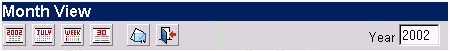

| A Barra de ferramenta do calendário é similar a barra de ferramentas principal, porém é customizada para operar o calendário.
Barra de ferramenta do calendário:

Figura de exemplo:
| Termo/Ícone |
Nome/Texto |
Ação |
 | Visualizar Ano | Mostra o calendário anual corrente. |
 | Visualizar Mês | Mostra o calendário mensal corrente. |
 | Visualizar Semana | Mostra o calendário semanal corrente. |
 | Visualizar Dia | Mostra o calendário diário corrente |
 | Voltar para a entrada | Retorna a caixa postal de entrada |
 | Sair | Sair da sessão do Open Webmail |
Você também pode mudar o ano de utilização, o Open WebMail indicará as datas corretamente. Altere simplesmente o campo do ano desejado. O mês, os dias, as semanas, e os eventos serão mudados a partir de agora de acordo com o ano desejado.
Você pode saber mais sobre o calendário
AQUI
. |